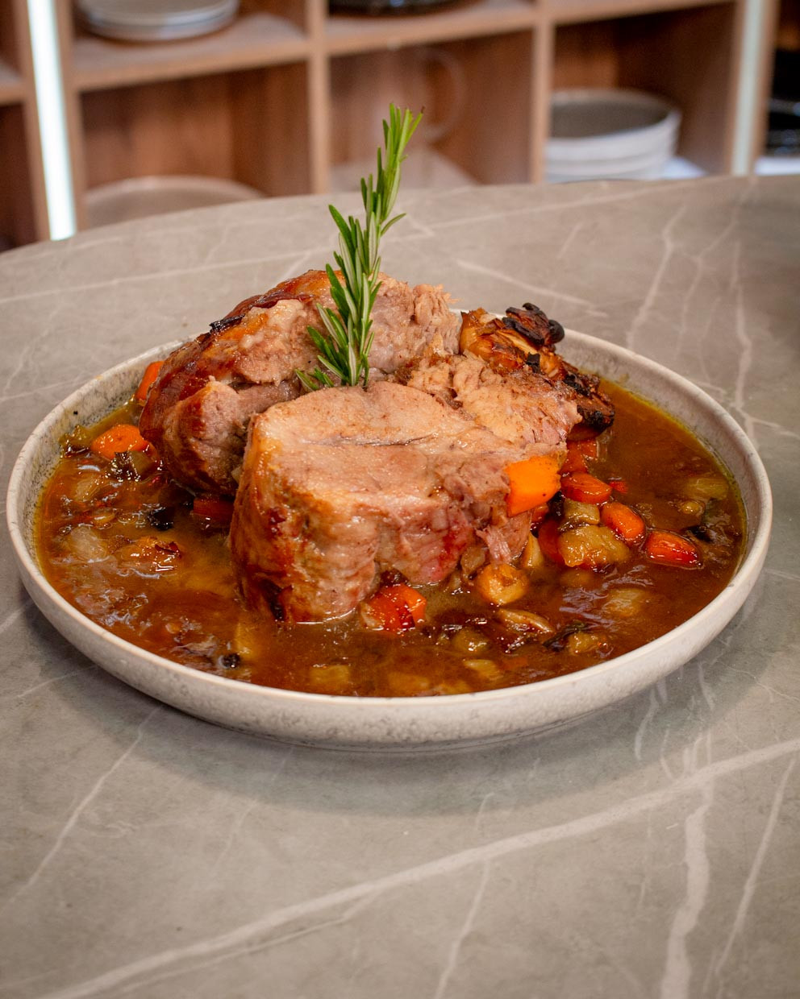

Receta del día
Cocinar es mucho más que combinar ingredientes: es una forma de expresión, una manera de compartir y un puente hacia recuerdos y culturas. En esta ocasión, te presentamos una receta que destaca por su sencillez y sabor, perfecta tanto para quienes se inician en la cocina como para los más experimentados. Con ingredientes fáciles de encontrar y pasos claros, podrás disfrutar de un plato delicioso hecho en casa, ideal para sorprender a tus seres queridos o simplemente para darte un gusto.
El día de hoy, la receta que vamos a mostrar es la de bondiola a la cerveza y miel. La bondiola a la cerveza y miel es una de esas recetas que conquistan desde el primer bocado. Combina lo mejor de dos mundos: la intensidad y profundidad de sabor que aporta la cerveza, con el toque dulce y caramelizado de la miel. El resultado es una carne tierna, jugosa y con una capa de sabor irresistible que se deshace en la boca.
A continuación te contamos todo lo que tenés que saber para hacerlos en casa.
Ingredientes
Antes de comenzar, es necesario tener en cuenta que para cocinar la bondiola a la cerveza y miel, se requieren los siguientes ingredientes:
- 1 bondiola entera
- Puerro
- Cebolla
- Zanahoria
- Tomillo
- Cerveza negra
- Miel
- Ajo
Instrucciones
Para que la receta salga correctamente, se deben seguir ordenadamente los siguientes pasos:
- Sellar la pieza.
- Llevar al horno con los vegetales y la cerveza. Cocción lenta 2 horas fuego medio.
- Retirar la carne.
- Filtrar el fondo de cocción y reducirlo con miel.
- Cortar en medallones.
- Salsear por encima.
Video de ayuda
Y si preferís un video antes que texto, esto es para vos...
Resultado
Si seguiste la receta que te mostramos, algo similar a esto se debería ver tu preparación.
Esperamos te haya salido bien y la disfrutes.
Nos alegra que hayas llegado hasta aquí y esperamos que esta receta haya despertado tu creatividad en la cocina. Cocinar no es solo seguir pasos: es ponerle amor, disfrutar el proceso y compartir buenos momentos alrededor de la mesa.
Cada ingrediente, cada técnica, cada detalle cuenta… y nos encanta poder ser parte de tu experiencia culinaria.
¿Te animaste a probarla? Nos encantaría saber cómo te quedó. Puedes dejar un comentario, compartir tu foto en redes sociales o contar tu propia versión del plato. ¡La cocina también se trata de compartir!
Gracias por acompañarnos en esta deliciosa aventura.
¡Nos vemos en la próxima preparación!

Otras recetas
Si seguiste la receta que te mostramos, algo similar a esto se debería ver tu preparación.
Esperamos te haya salido bien y la disfrutes.
Nos alegra que hayas llegado hasta aquí y esperamos que esta receta haya despertado tu creatividad en la cocina. Cocinar no es solo seguir pasos: es ponerle amor, disfrutar el proceso y compartir buenos momentos alrededor de la mesa.
Cada ingrediente, cada técnica, cada detalle cuenta… y nos encanta poder ser parte de tu experiencia culinaria.
¿Te animaste a probarla? Nos encantaría saber cómo te quedó. Puedes dejar un comentario, compartir tu foto en redes sociales o contar tu propia versión del plato. ¡La cocina también se trata de compartir!
Gracias por acompañarnos en esta deliciosa aventura.
¡Nos vemos en la próxima preparación!
Si te gustó esta, tenemos miles de recetas más para vos. Estas son solo algunas de ellas: churrasco de cerdo marinado, pastel de carne al horno o wraps de pollo y berenjena.